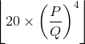

Perlombaan OSN akan segera dimulai! Di dalam ruang lomba telah disediakan kursi yang disusun membentuk persegi panjang berisi R baris (dinomori 1 sampai R dari utara ke selatan) × C kolom (dinomori 1 sampai C dari barat ke timur). Kursi pada baris ke-i dan kolom ke-j disediakan untuk peserta OSN jika (i + j) bernilai ganjil, dan disediakan untuk pengawas OSN jika (i + j) bernilai genap.
Setiap kursi yang disediakan untuk pengawas OSN pada saat ini masih dalam keadaan kosong. Setiap kursi yang disediakan untuk peserta OSN mungkin saja kosong atau ditempati oleh seorang peserta OSN. Terdapat setidaknya seorang peserta OSN.
Keadaan seluruh kursi di dalam ruang lomba pada saat ini dapat direpresentasikan dalam sebuah
matriks S. Apabila kursi pada baris ke-i dan kolom ke-j pada saat ini dalam keadaan kosong, maka
S[i][j] berisi sebuah karakter .. Sebaliknya, apabila kursi pada baris ke-i dan kolom
ke-j pada saat ini ditempati seorang peserta, maka S[i][j] berisi sebuah karakter x.
Anda ingin mengawasi seluruh peserta OSN. Karenanya, untuk setiap kursi yang disediakan untuk pengawas OSN, Anda dapat meletakkan seorang pengawas dan menentukan arah duduk pengawas tersebut. Pengawas yang duduk pada baris ke-i dan kolom ke-j dapat mengawasi:
Nilai Anda akan bergantung pada banyaknya peserta OSN yang diawasi oleh setidaknya satu pengawas, menggunakan rumus yang akan dijelaskan pada bagian Penilaian.
Soal ini bertipe "output-only". Untuk setiap kasus uji, Anda menuliskan keluaran program ke dalam sebuah berkas keluaran.
Masukan untuk soal ini dapat diunduh di sini. Di dalam berkas .zip tersebut terdapat 1 + 5 masukan untuk diselesaikan: mengawasi_sample_1.in, mengawasi_1.in, mengawasi_2.in, ..., mengawasi_5.in. Masukan contoh (mengawasi_sample_1.in) tidak termasuk dalam penilaian peserta.
Untuk setiap berkas masukan yang diselesaikan (Anda tidak harus menyelesaikan semua masukan), buatlah berkas keluaran dengan nama mengawasi_sample_X.out (untuk masukan contoh) atau mengawasi_X.out, dengan X adalah nomor kasus uji. Setelah itu, kompres semua berkas keluaran dalam sebuah berkas .zip, lalu kumpulkan.
Masukan diberikan dalam format berikut:
R C S[1][1]S[1][2]...S[1][C] S[2][1]S[2][2]...S[2][C] . . . . . . . .. S[R][1]S[R][2]...S[R][C]
R baris: baris ke-i berisi C karakter. Karakter ke-j pada baris ke-i adalah:
. jika kursi pada baris ke-i dan kolom ke-j pada awalnya kosong dan Anda
membiarkannya kosong.x jika kursi pada baris ke-i dan kolom ke-j ditempati seorang peserta.v jika kursi pada baris ke-i dan kolom ke-j pada awalnya kosong dan Anda
meletakkan seorang pengawas yang duduk mengarah ke selatan pada kursi tersebut.^ jika kursi pada baris ke-i dan kolom ke-j pada awalnya kosong dan Anda
meletakkan seorang pengawas yang duduk mengarah ke utara pada kursi tersebut.> jika kursi pada baris ke-i dan kolom ke-j pada awalnya kosong dan Anda
meletakkan seorang pengawas yang duduk mengarah ke timur pada kursi tersebut.< jika kursi pada baris ke-i dan kolom ke-j pada awalnya kosong dan Anda
meletakkan seorang pengawas yang duduk mengarah ke barat pada kursi tersebut.Keluaran berikut juga merupakan keluaran yang benar.
>x<x< .^x<. v...v .<.>x
Keluaran Anda akan mendapatkan nilai pada sebuah kasus uji jika keluaran Anda mengikuti format keluaran yang disebutkan sebelumnya dan memenuhi seluruh syarat berikut:
. dan (i + j) bernilai ganjil, maka karakter ke-j pada baris ke-i
dalam keluaran Anda adalah ... dan (i + j) bernilai genap, maka karakter ke-j pada baris ke-i
dalam keluaran Anda adalah ., v, ^, >,
atau <.x, maka karakter ke-j pada baris ke-i dalam keluaran Anda adalah
x.Jika P adalah banyaknya peserta OSN yang diawasi oleh setidaknya satu pengawas pada solusi Anda, dan Q adalah banyaknya peserta OSN maksimum yang dapat diawasi oleh setidaknya satu pengawas pada solusi optimal, maka nilai yang Anda dapatkan adalah:
| Kondisi | Poin |
|---|---|
| P = Q | 20 |
| P < Q |  |
Untuk setiap kasus uji:
. atau x.x pada S...., untuk 1 ≤ i ≤ R.x.